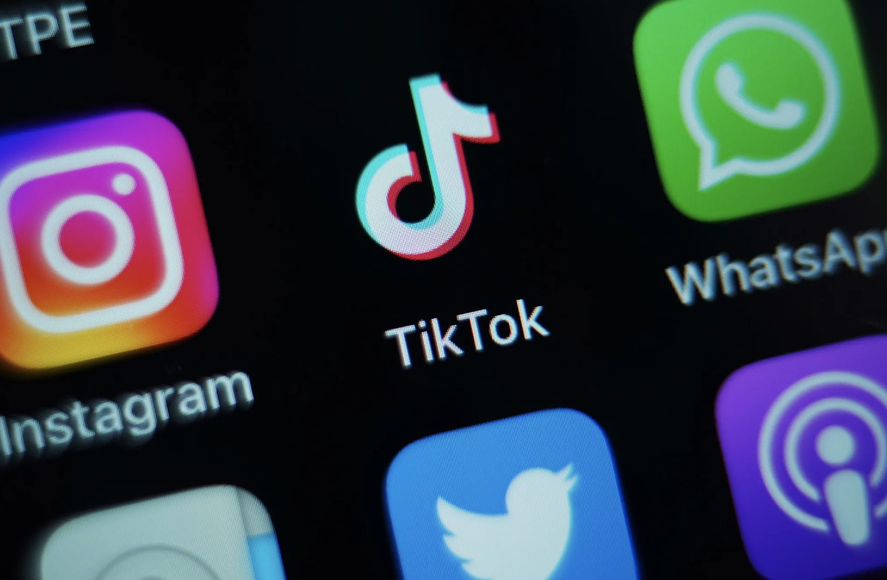
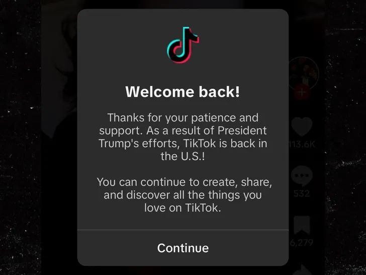

INFO 474 Final Project
Group 2: Yuvika Verma, Teresa Wang, Lucia Zou
The answer is probably “Yes”.
In today’s short-form video era, TikTok is one of the most influential social platforms in the world,
especially in the United States: its far-reaching influences make it a uniquely consequential platform in today’s social media ecosystem.
Yet this significance has also placed TikTok at the center of a mounting regulatory debate in the United States, which leads to our narrative story:
understanding how U.S. regulations have evolved, how they’ve influenced TikTok, and how users and the market have shifted across platforms as a result.
Ultimately, we hope to show how policy changes can have effects on the entire social media ecosystem.
To understand TikTok’s rise, it helps to first see where it stands among other major social platforms.
Facebook, WhatsApp, and Instagram have been around for more than a decade, and each has grown to over 3 billion users.
TikTok, however, is much younger. Even with far fewer years on the market, it has already climbed to nearly 2 billion users.
This rapid growth reflects changes in how people consume information and entertainment, while also shaping those changes even further.
But how does TikTok’s growth look across different countries around the world?
This intractive map highlights TikTok users by country and shows how its global audience has shifted
from 2023 to 2025. Darker shades indicate countries with higher user counts, revealing where the platform
has grown fastest and where adoption remains limited. Feel free to select a year between 2023 and 2025 to explore
how the number of users across different countries change through the years.
From this map, we can see that the United States seems to
consistently be among the countries with the highest number of TikTok users over these years. Additionally,
this map illustrates emerging markets where TikTok is rapidly gaining traction, providing a clear picture of how
the platform’s influence and reach have evolved globally over time. Through the years, we can see how US consistently
remains one of the top countries with the highest number of TikTok users. But how does TikTok’s user demographics look like within the US
by different age groups?
In the bar chart, the teenagers and young adults count a large part among all TikTok users; but as for the middle-aged and elderly people,
they tend not to use TikTok as their main social media platform.
This suggests that the young users dominate on the TikTok platform in United States, which suggests the public opinions will easily impact the younger users to shape their ideas.
After understanding the demographics of TikTok users worldwide and focus in the United States, how it’s associated with the enforcement of regulations?
The regulation was driven primarily by following major concerns: data security, and Tiktok’s influencial vulnerabilities towards users.
Due to the fact that ByteDance is a China-based company, which is TikTok belonged to, U.S. argued that the Chinese government could compel access to American users’ data under the law (e.g., 2017 National Intelligence Law).
This may bring concerns on data leakage and broader national-security threats, becoming a central justification for regulatory action.
Towards users’ side, the United States consistently remains one of the countries with the highest number of TikTok users, indicates TikTok’s significant popularity and penetrated influences in the United States.
As young users make up the dominant demographic, emerging trends and public viewpoints will profoundly impact how they shift and express themselves.
"In March 2022, eight states, including California and Massachusetts, launched a probe into whether TikTok causes physical or mental health harm to young people and what the company knew about its role in those harms."
With these potential risks associated, the U.S. government began to take direct actions to regulate TikTok, leading to our further explorations.
From 2020 to 2024, U.S. started to put pressure on TikTok — starting with Trump’s order to sell or ban the app, followed by federal-device bans, a new law requiring a sale or nationwide ban, and finally a federal court upholding the ban.
On January 19, The deadline arrived, and TikTok was no longer accessible to users in the US, marking the closest the U.S. has come to an actual ban. On January 20, President Trump granted a 75-day extension. TikTok restored.
During the 12 hour outage advertisers rapidly shifted their spending from TikTok to Meta.
But small and large businesses responded differently:
it's more difficult for small businesses to change their advertising strategies and shift their budgets around. So when tiktok went down, they took less actions and tend to wait for the platform to comeback,
while large businesses can reallocate budgets more flexibly, allowing them to take actions faster.
The ban didn’t end United States’ TikTok era, it simply forced it to relocate.
Rednote is a Chinese social media app which is similar to Instagram, a post-sharing platform.
After the policy made on 25/01/19, there is a surprising increase in downloads of Rednote for United States users, as we can see on the right side, the yellow highlight circle represents.
The yellow circle emphasizes this great increase of U.S. users shift from TikTok to Rednote, also for the rest of the world.
The influx was fueled by U.S. users’ desire to follow creators, find a new space for their content, and express defiance against the ban.
Some users also sought out the platform for the unique cross-cultural exchange it offered with Chinese users, viewing it as a special opportunity for connection.
This trend indicates that users are seeking alternatives to TikTok in response to regulatory pressures,
highlighting the impact of U.S. policies on user behavior and platform dynamics.
This trendline clarifies exactly what’s at stake when discussions of a ban surface. Tiktok isn’t just another social platform that’s competing for attention. It’s the one gaining ground while others move foward or are starting to fall back. The contrast makes the policy tension sharper. A platform on the rise is facing the possibility of abrupt disruption. For the ecosystem, it becomes destabilizing and causes a lot of uncertainty.
TikTok’s rapid rise has changed how millions of Americans consume and share information, making it a platform with huge
influence, as well as scrutiny.
U.S. regulations have not only challenged TikTok directly but also reshaped the broader social media
ecosystem, showing that when one giant is shaken, the entire landscape shifts. Its evolution illustrates how quickly social media can shift under regulatory
pressure, while the rapid rise of alternatives like Rednote highlights users’ adaptability and the dynamic nature of digital preferences.
Policy decisions, market dynamics, and user behavior are deeply connected, with shifts in one area rippling across the entire social media landscape.
Understanding these trends is crucial
for stakeholders and observers, offering insights into both the opportunities and risks shaping the future of social media.

Here are the sources we used to help create our visualizations and gather information from. Please visit these sites to explore the data further!
- The Top 10 Social Media Platforms
- TikTok Users by Country data source
- U.S. Users Across Various Social Media Platforms from 2019-2025 data source
- TikTok Age Demographics article
- Rednote downloads in the US data source
- TikTok Users Continue to Grow and Evolve article
- TikTok Statistics article
- More Gen Zers Now Use TikTok Than Instagram in the US article
- Digital Report for July 2025 article
- Why U.S. Starts to Regulate on TikTok article
- Why Many TikTokers Are Moving to Chinese App Rednote article
- Implications for the digital advertising market (tiktok vs. Meta)